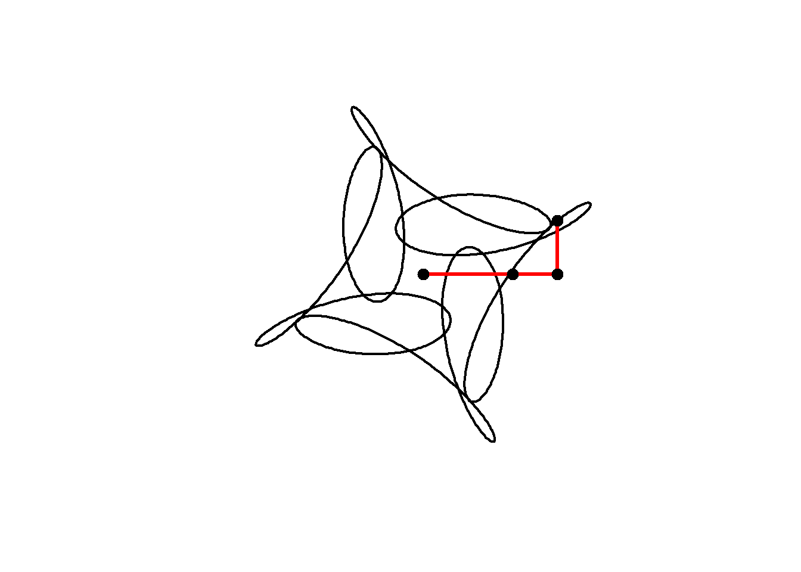

t = seq(0, 4, l=1000)Mystery curves
art
R
‘Mystery curves’ are described by Frank Farris in his book Creating Symmetry. They are a kind of circular harmonograph, each created by summing three circular components, and are the basis for a lot of my creative coding.
For example, these two pieces are both based on mystery curves:


In this post I’ll explain how mystery curves are put together, how I do this using R, and finish with the complete code of an animation.
A note on R
In this post I have shown the complete R source code used to generate each image or animation.
For the first few animations, individual images are defined within for loops, and these are combined into a gif as the blog post was built (as described here. The final two animations are supplied with the complete code (using the gifski package) to generate gifs.
This page is written using Quarto in RStudio, the code for the page is available on the github. Anyway…
Describing curves with complex numbers using R
Curves (including circles) can described as complex functions \(z(t)\).
R handles complex numbers very simply, and so describing circles (and mystery curves) in this way and plotting them using R is straightforward.
First we create the index \(t\).
This creates a vector t including the sequence 0 to \(4\) in 1000 steps.
Now to create our circle. Using complex maths, \(z(t)=i^t\) with \(t\) between 0 and 4 describes a complete circle.
In R we use 1i for the complex number \(i=\sqrt{-1}\). So we define a vector z=1i^t and make a plot.
# Script to draw a circle
t = seq(0, 4, l=1000)
z = 1i^t
plot(z)Note that we don’t need a loop to calculate and plot the entire function. t is a vector of 1000 values, and so when we use z=1i^t R creates a vector z with 1000 corresponding values. When we call plot with the complex vector z R simply plots the imaginary component on the vertical axis against the real component on the horizontal axis.
To see the first few t and z values we could use:
cbind(t,z) |> head() t z
[1,] 0.000000000+0i 1.0000000+0.0000000i
[2,] 0.004004004+0i 0.9999802+0.0062894i
[3,] 0.008008008+0i 0.9999209+0.0125786i
[4,] 0.012012012+0i 0.9998220+0.0188673i
[5,] 0.016016016+0i 0.9996836+0.0251552i
[6,] 0.020020020+0i 0.9995056+0.0314422iArtistic augmentations
Now there’s a few things we would want to change about this plot. We don’t want the axes or the annotation, we would like it to be a connected as a line rather than a series of points, and we would like the aspect ratio to be 1. I also set and the linewidth lwd to be 2.
So we can amend our script as follows:
t = seq(0, 4, l=1000)
z = 1i^t
plot(z, axes=FALSE, ann=FALSE, type="l", lwd=2, asp=1)A mystery curve
Now to add the mystery elements. These are created by adding more circular motion with different amplitude, frequency and phase to our existing circle. For example, lets plot \(z(t)=i^t + 0.5i^{5t+1}\).
amp=0.5
freq=5
phase=1
z = 1i^t + # Our original circle
amp*(1i^(freq*t + phase)) # A new cirlce
plot(z, axes=FALSE, ann=FALSE, type="l", lwd=2, asp=1)
The animation below shows how this curve works. We are adding two circular motions together, the second rotating five times for every one rotation of the first, but with a smaller radius (0.5) and starting from a different angle. Notice how the second circle rotating five times for every one of the main circle leads to 4-fold rotational symmetry in the resulting shape:
amp=0.5
freq=5
phase=1
t = seq(0, 4, l=1000)
for(j in seq(1,1000,10)){
z = 1i^t + # Our original circle
amp*(1i^(freq*t + phase)) # A new cirlce
plot(z, axes=FALSE, ann=FALSE, type="l", lwd=2, asp=1)
lines(c(0,(1i^t)[j],z[j]),lwd=3,col="red") # add lines
points(c(0,(1i^t)[j],z[j]),cex=2,pch=20) # add points
}
Now when we add another term we get a plot that looks even more interesting. Rather than defining \(t\) and typing out the formula for a circle each time, I will create a function to define a circle, then add three circles together as follows:
circle <- function(amp, freq, phase) amp*1i^(freq*seq(0,4,l=1000)+phase)
z = circle(1,1,0) + circle(0.5,5,0) + circle(0.6,9,1)
plot(z, axes=FALSE, ann=FALSE, type="l", lwd=2, asp=1)We can animate the motion similarly to the previous curve:
circle <- function(amp, freq, phase) amp*1i^(freq*seq(0,4,l=1000)+phase)
for(j in seq(1,1000,2)){
z = circle(1,1,0) + circle(0.5,5,0) + circle(0.6,9,1)
plot(z, axes=FALSE, ann=FALSE, type="l", lwd=2, asp=1)
lps = cumsum(c(0,circle(1,1,0)[j],circle(0.5,5,0)[j],circle(0.6,9,1)[j]))
lines(lps,lwd=3,col="red")
points(lps,cex=2,pch=20)
}
Note that this plot, with three components having frequencies 1, 5 and 9 still has 4-fold rotational symmetry. As Farris explains, the image will have \(N\)-fold rotational symmetry if the frequency of each circle has the same remainder when divided by \(N\), that is, all frequencies equal mod \(N\). Here, 1, 5 and 9 are all 1 (mod 4) and so the image has 4-fold rotational symmetry.
We can include negative frequencies as well, so long as we remember this rule. Since \(-7\mod 4 =1\) this will also have 4-fold rotational symmetry:
circle <- function(amp, freq, phase) amp*1i^(freq*seq(0,4,l=1000)+phase)
for(j in seq(1,1000,2)){
z = circle(1,1,0) + circle(0.5,5,0) + circle(0.6,-7,1)
plot(z, axes=FALSE, ann=FALSE, type="l", lwd=2, asp=1)
lps = cumsum(c(0,circle(1,1,0)[j],circle(0.5,5,0)[j],circle(0.6,-7,1)[j]))
lines(lps,lwd=3,col="red")
points(lps,cex=2,pch=20)
}
We can alter the shape of a curve over time by changing its parameters as we animate. In the code below, an animation is built with the parameter \(j\) which varies from 0 to 4 in 100 steps . The phase shift (starting angle) of the third component is set equal to \(j\).
In addition, the limits of the plot are now fixed at \((-2,2)\) in both dimensions.
circle <- function(amp, freq, phase) amp*1i^(freq*seq(0,4,l=1000)+phase)
limits=c(-1,1)*2
for( j in seq(0,4,l=100)[-1]){
z = circle(1,1,0) + circle(0.5,5,0) + circle(0.6,-7,j)
plot(z, xlim=limits, ylim=limits,
axes=FALSE, ann=FALSE, type="l",
lwd=2, asp=1, mar=c(0,0,0,0))
}Mystery Rose
As an artistic embellishment, we can plot the points out of order, and connect them with lines. If instead of \(t\) = 0 to 4 in 1000 steps, we use \(t\) = 0 to 40 in 800 steps, then our points will skip around the curve in equally spaced intervals, before arriving at \(z(40)=z(0)\). This is similar to the construction of a Maurer rose, but using a mystery curve as the underlying curve.
circle <- function(amp, freq, phase) amp*1i^(freq*seq(0,400,l=800)+phase)
limits=c(-1,1)*3
for(j in seq(0,4,l=100)[-1]){
z = circle(1,1,0) + circle(1,6,0) + circle(1,-9,j)
par(bg="black", mar=c(0,0,0,0)) # set a black background
# create plot with points
plot(xlim=limits, ylim=limits,col="cyan",pch=20,
z, axes=FALSE, ann=FALSE, asp=1)
lines(z,col=hsv(.7,.5,1,.5)) # connect points with lines
}If we modulate the amplitudes of the components with time, we can change the shape of the curve in a very dynamic way.
Note in this example I also use the gifski package explicitly to produce the animation as a .gif :
library(gifski)
circle <- function(amp, freq, phase) amp*1i^(freq*seq(0,400,l=799)+phase)
limits=c(-1,1)*2.5
# lapply here makes a 'list' of plots,
# save_gif turns this list into a gif
save_gif(lapply(seq(0,4,l=500)[-1],
function(j){
par(bg="black")
z = circle(1,1,0) + circle(sin(pi*j/2),6,0) + circle(cos(pi*j/2),-9,j)
hue = (j/4+seq(0,0.5,l=799))%%1
plot(xlim=limits, ylim=limits,col=hsv(hue,.8,1),pch=19,
z, axes=FALSE, ann=FALSE, asp=1, mar=c(0,0,0,0))
lines(z,col=hsv(hue[1],.5,1,0.4))
}),
delay=1/30,width = 800,height=800, gif_file = "mystery.gif")
Note the use of col= to set the colours of the points and lines. I used col=hsv(...) to choose the hue, saturation and value for each point and line.
Finally, we can change the frequencies, amplitudes and phases in sync to arrive at this animation from 2021. The trick here is to use integer frequencies, and to only change the frequency of a component when its corresponding amplitude is zero. This way our animation can smoothly change its order of rotational symmetry throughout.
There are a couple of other nuances in the code below, most important that lines produced by lines cannot be different colours, and so I use segments instead.
library(gifski)
circle <- function(amp, freq, phase) amp*1i^(freq*seq(0,600,l=260)+phase)
limits=3.5*c(-1,1)
li <- seq(0,1,l=500)[-1]
save_gif(lapply(1:length(li), function(ai){
a = li[ai]*5;
l = sin(pi*(2*a-.5))+1
z<-circle(1,1,0) +
circle(l, ceiling(a), -8*a) +
circle(l/2-1,ceiling(((-a+2.5)%%5)-5), -4*a)
par(mar=c(0,0,0,0), bg="#04010F")
hue=(a+(Re(z/10)))%%1
plot(z,
col=hsv(hue, 0.65,1),
pch=20, lwd=1, cex=1.5, type="p", axes=F,
xlim=limits, ylim=limits)
z2 <- c(z[-1], z[1])
segments(Re(z), Im(z), Re(z2), Im(z2),
col=hsv(hue, 0.65,1,.1), pch=20, lwd=1)
}), delay = 1/40, width=800, height=800, gif_file = "mystery2.gif")
Thanks for reading, comments welcome.